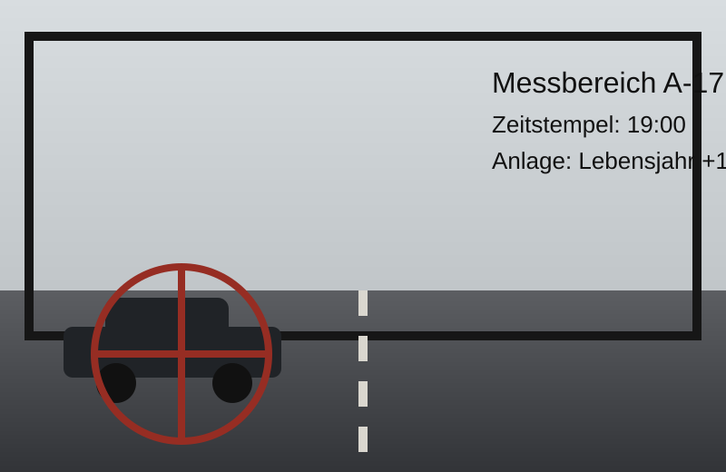

Zentrale Stelle für Verkehrsangelegenheiten und Lebensfortschritt
Betroffene Person
Formblatt 17b- Name
- Alex Beispiel
- Geburtsvorgang
- Wiederkehrend festgestellt
- Festgestellte Überschreitung
- +1 Lebensjahr
- Ort der Vorladung
- Atelierhaus Nord, Berlin
Beweisfoto
PRÜFFALL
Tatvorwurf
Abschnitt AG-29Ihnen wird vorgeworfen, am genannten Datum vorsätzlich oder fahrlässig ein weiteres Lebensjahr erreicht zu haben.
Nach vorläufiger Bewertung liegt eine Überschreitung der zulässigen Altersgrenze um 1 Jahr vor. Der Vorgang erfolgte unter Teilnahme Dritter und kann nicht mehr glaubhaft zurückgenommen werden.
Weitere Angaben zum Anlass:
Mögliche Begleitmaßnahmen:
Anhörung / Stellungnahme
FRISTSACHESie erhalten Gelegenheit, sich zum Vorgang zu äußern. Von weiteren Maßnahmen kann bei fristgerechtem persönlichem Erscheinen abgesehen werden.
Eine außergerichtliche Erledigung durch soziale Teilnahme, angemessene Anwesenheit sowie die Aufnahme von Speisen und Getränken wird ausdrücklich empfohlen.
Hinweis zur Verifizierung: Die benötigte Zahl entspricht dem Alter, das nach Vollzug des vorgeworfenen Lebensjahres erreicht wird.